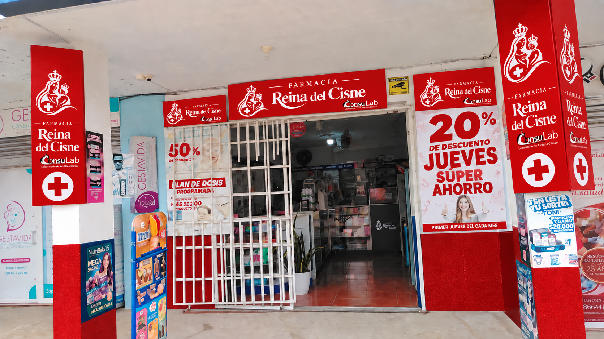

Tu bienestar
empieza aquí.
Los esenciales para tu día a día, con el cuidado y la atención de tu farmacia de siempre.

Encuentra lo que buscas
Compra por categoría.
Más motivos para cuidarte
Promociones y novedades.
Cargando promociones…
Selección Reina del Cisne
Esenciales para cuidarte.
Estamos cerca
Entregas en todo Puerto Quito.
Consulta la tarifa al preparar tu pedido. Si está pendiente, coordina con la farmacia. Las zonas aledañas todavía no tienen cobertura.
Ven a visitarnos
Cerca de tu rutina.
Atención rápida, productos esenciales y una farmacia cercana para resolver necesidades de salud, bienestar y cuidado cotidiano.
⌖DirecciónFarmacia Reina del Cisne — consulta la ubicación exacta en el mapa
◷HorarioLun–Sáb · 08:00 a 19:00
¿Necesitas una mano?
Pregunta. Estamos cerca.
Te ayudamos con productos, orientación y atención rápida por WhatsApp. Es la forma más directa de comunicarte con la farmacia.
Cuéntanos qué necesitas
Prepara tu consulta.
Completa tus datos, revísalos y abre WhatsApp para enviar el mensaje. Todos los campos son obligatorios.
Preguntas frecuentes
Lo que podrías querer saber.
¿Puedo consultar si tienen un producto?
Sí. Escríbenos por WhatsApp o llama antes de venir. Te ayudamos a confirmar disponibilidad con la información más clara posible.
¿Tienen servicio a domicilio?
La cobertura inicial abarca todo Puerto Quito. Revisa la tarifa al preparar tu pedido; si está pendiente, contacta a la farmacia. Las zonas aledañas aún no están habilitadas.
¿Puedo comprar y pagar desde el sitio?
Puedes registrarte, iniciar sesión y confirmar tu pedido. El pago y la entrega se coordinan directamente con la farmacia.